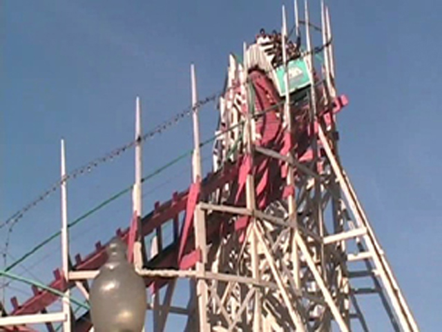
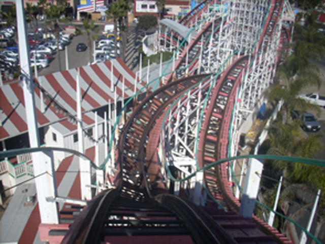
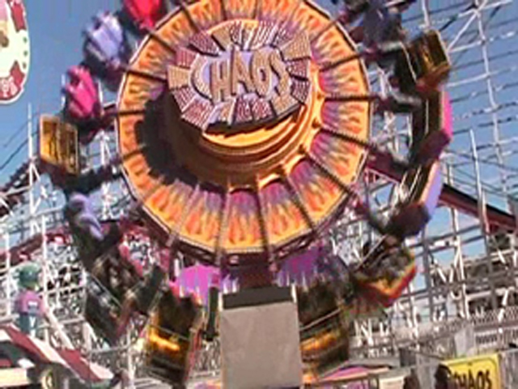
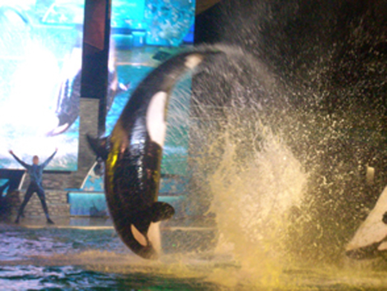
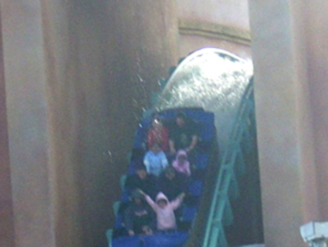
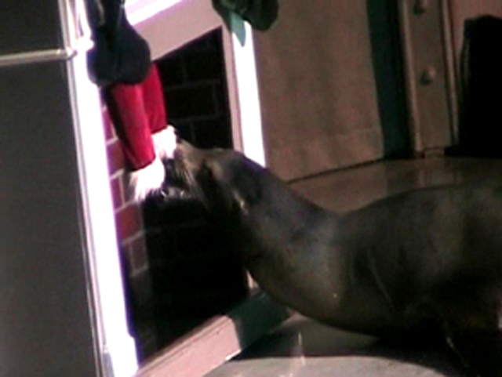

A Random Trip to San Diego
Ok, After Xmas, I took a mini trip and went to San Diego for 2 days. However, I did not take many pictures. So I put Belmont Park and Sea World San Diego on the same page.

Here's the reason for coming to Belmont Park.
 Ooh!! Fun Twisty 1st Drop!!!
Ooh!! Fun Twisty 1st Drop!!!

Seriously, This is a fun wooden coaster. 82 years old and kicking Mean Streaks ass by a long shot.

Ok, Time for my little rant about the Santa Monica Pier. Why did they take this ride out for that damn scrambler!!! This is a great ride and I forgot how much they were until I rode the one at Belmont today. I remember loving this ride at the Santa Monica Pier 5 years ago, and today, I found out why. Stupid Santa Monica Pier. The rides arn't that fun, Westcoaster puts me to sleep and their carousel has the 2nd Worst Ride Operator. Millenium Force still gets the award for worst ride operators. But seriously, Stupid Santa Monica Pier.
Oh yeah, They have a Frisbee here too. Better than La Revolution @ KBF as always. See Santa Monica Pier, My time at Belmont Park was fun. Giant Dipper was a good rollercoaster and the flat rides here are actually fun. You getting anything from this.
And here we are at Sea World to see a Shamu show.

It was a good show and Shamu did lots of tricks. Or translated into General Public Speak. "THE SHOW WAS BETTER THAN SEX!!!! SHAMU JUST WENT LOOP-DE-LOOP JUST LIKE THE BIG BLUE ROLLERCOASTER!!!!!"
Here is Allie's newest boyfriend.
 And here is the reason for coming to Sea World
And here is the reason for coming to Sea World

It counts as a credit.
 This would get an automatic F from Cody because there's no bridge to soak himself on.
This would get an automatic F from Cody because there's no bridge to soak himself on.
 Here's a random show I saw. It included...
Here's a random show I saw. It included...

A seal eating Santa's foot,
Elmo falling to his watery grave,
And a gay guy.
Home